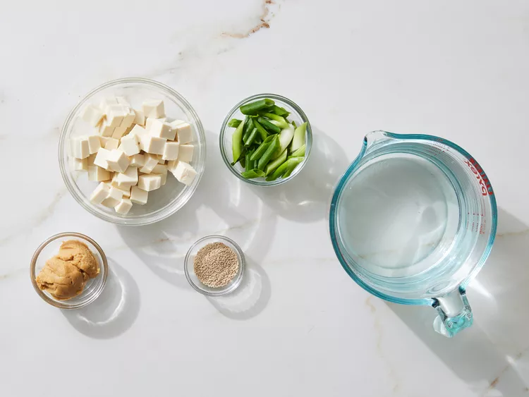
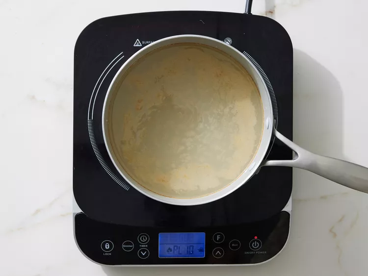
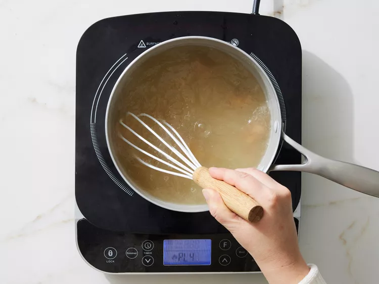
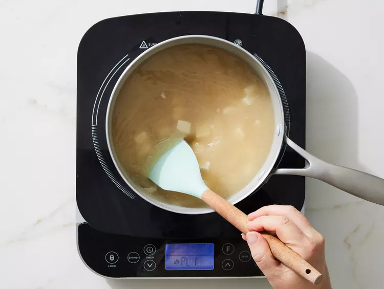

Home
Miso Soup
Miso soup is a traditional Japanese soup made from a savory broth called dashi and flavored with fermented soybean paste (miso). Often it includes tofu, seaweed, and green onions.

Photos by Dotdash Meredith Food Studios
Ingredients
- 4 cups water
- 2 teaspoons dashi granules
- 3 tablespoons miso paste
- 1 (8 ounce) package silken tofu, diced
- 2 green onions, sliced diagonally into 1/2 inch pieces
Directions
- Gather all ingredients.

- Combine water and dashi granules in a medium saucepan over medium-high heat; bring to a boil.

- Reduce heat to medium and whisk in miso paste.

- Stir in tofu.

- Separate the layers of green onions, and add them to the soup. Simmer gently for 2 to 3 minutes before serving.